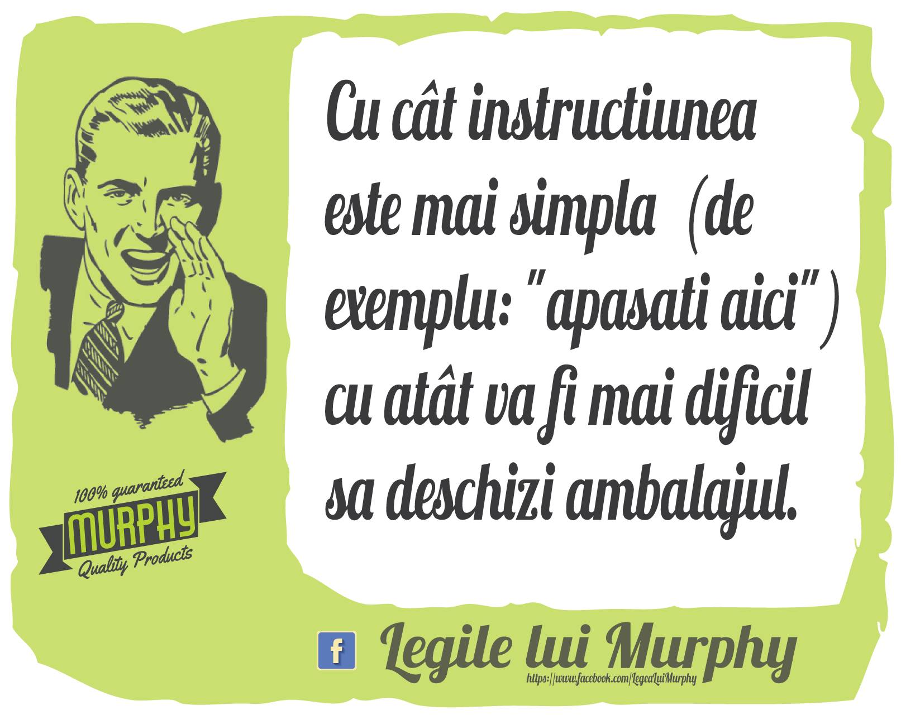
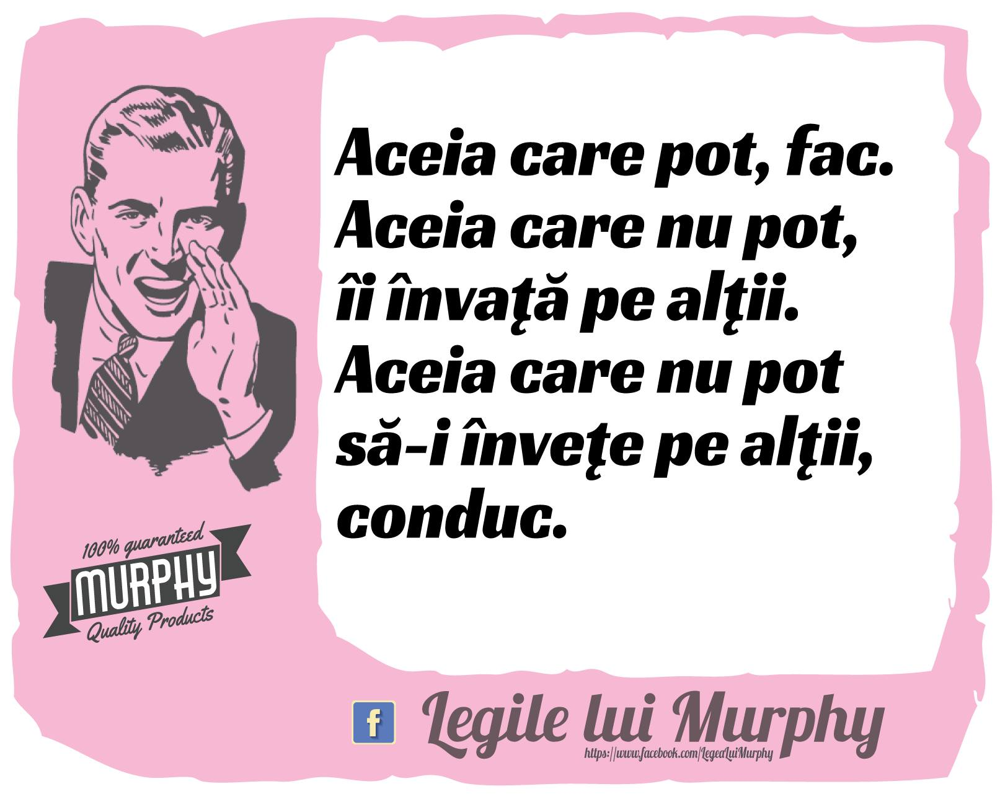
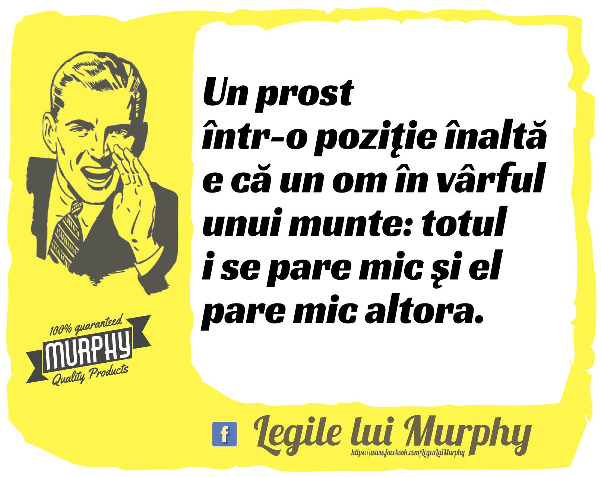
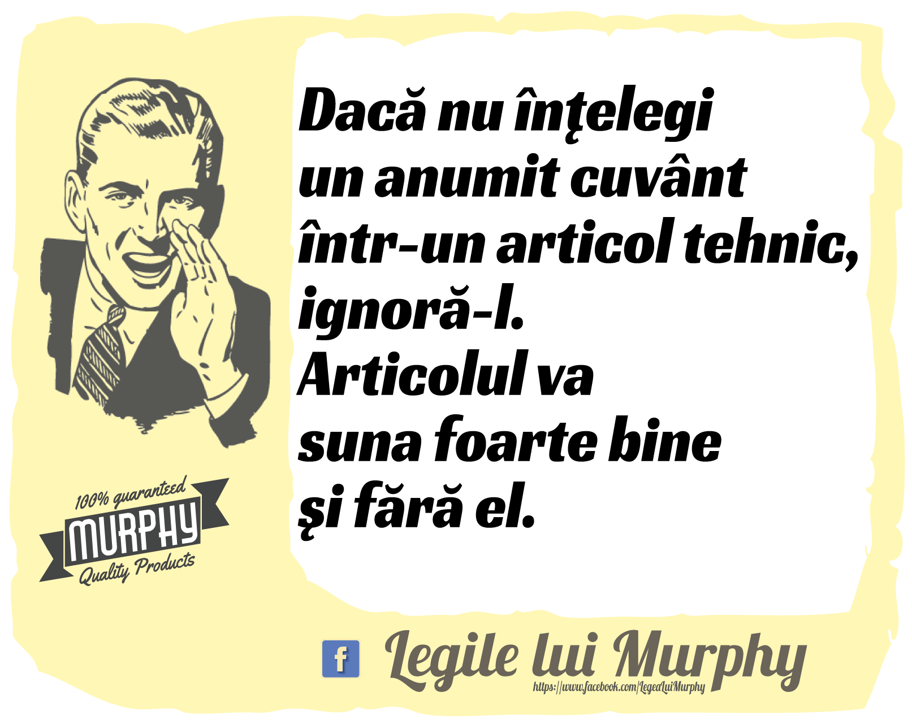

"If there is any way to do it wrong, he will"
"Dacă există o metodă de a greşi, el a găsit-o"
--- Edward Aloysius Murphy (1918 - 1990)
Edward Aloysius Murphy: Legea lui Murphy

Despre: Edward Aloysius Murphy
Născut în zona Canalului Panama în 1918, Murphy era cel mai mare dintre cei cinci copii. După ce a urmat liceul în New Jersey, a mers la Academia Militară a Statelor Unite din West Point, absolvind în 1940. În același an a acceptat o comisie în armata Statelor Unite și a întreprins pregătirea pilotului cu United States Army Air Corps în 1941. În timpul celui de-al doilea război mondial a slujit în Teatrul Pacific, India, China și Birmania (cunoscută acum sub numele de Myanmar), obținând rangul de maior.
După sfârșitul ostilităților, în 1947 Murphy a participat la Institutul de Tehnologie al Forțelor Aeriene ale Statelor Unite, devenind ofițer de cercetare și dezvoltare la Centrul de dezvoltare aeriană Wright din baza forței aeriene Wright-Patterson. Tocmai aici s-a implicat în experimentele de sanie cu rachete de mare viteză (proiectul USAF MX981, 1949) care au dus la inventarea legii lui Murphy.
Edward Murphy ar fi exclamat, enervat pe un tehnician care nu îşi făcuse bine treaba: "If there is any way to do it wrong, he will" (Dacă există o metodă de a greşi, el a găsit-o).
Murphologie
De-a lungul timpului s-au adăugat o serie de alte „legi”, formând așa-numita murphologie:
Finagle: "Dacă ceva poate să meargă prost, va merge prost, în cel mai defavorabil moment posibil."
Flanagan: "Murphy a fost un optimist."
Silverman: "Dacă legea lui Murphy poate să greșească, va greși."
Legea extinsă a lui Murphy: "Dacă o serie de evenimente pot merge prost, vor merge prost, în cea mai proastă secvență posibilă."
|  |  | |
|  |  |
Controversa
În realitate, noi suntem cei care percep Legile lui Murphy a fi atât de relevante pentru viața noastră. Atunci când viața merge bine, nu căutăm motive. La urma urmei, ne așteptăm ca lucrurile să meargă în favoarea noastră. Dar când lucrurile merg prost, căutăm motive.
Gândește-te la mers! De câte ori ai ajuns la destinație și te-ai gândit cât de bine ai mers până acolo? Dar când te împiedici de o bordură și îți luxezi glezna, te miri că ți s-a întâmplat acest lucru. Legile lui Murphy se bazează pe tendința noastră de a fi negativiști și de a trece cu vederea lucrurile pozitive. Însă Legile lui Murphy sunt un concept relativ nou, datând de la mijlocul secolului trecut.
Te întrebi de ce reprezintă un concept universal solid? Poate că cea mai bună explicație pentru atracția noastră față de legile lui Murphy reprezintă simțul fatalismului.
Fatalismul reprezintă ideea conform căreia suntem cu toții neputincioși în fața vieții.
Această noțiune spune că lucrurile care ni se întâmplă sunt inevitabile. Este vorba despre faptul că există un fel de lege universală, care se joacă cu viețile noastre.
Fatalismul contrazice un alt concept - voința liberă. Aceasta reprezintă ideea că oamenii au o voință liberă și că toate alegerile, alături de consecințe, sunt ale lor. Poate că legătura pe care o avem cu legile lui Murphy este rezultatul coliziunii dintre voința liberă și fatalism.
Legile lui Murphy nu dovedesc nimic. Nici măcar nu explică nimic. Pur și simplu afirmă faptul că lucrurile vor merge prost. Dar uităm că există și alte forțe atunci când luăm în considerare aceste legi.
Viața este grea. Însă trebuie să ții cont de faptul că unele momente sunt mai grele decât altele. Sau te poți gândi că o felie de pâine va ateriza pe podea întotdeauna cu partea unsă cu unt în jos.